Below there is a list of the feature films that the company has created since its first movie, Toy Story (1995) to its most recent movie Coco (2017).
| Films | Movie Poster | Description |
|---|---|---|
| Toy Story (1995) | 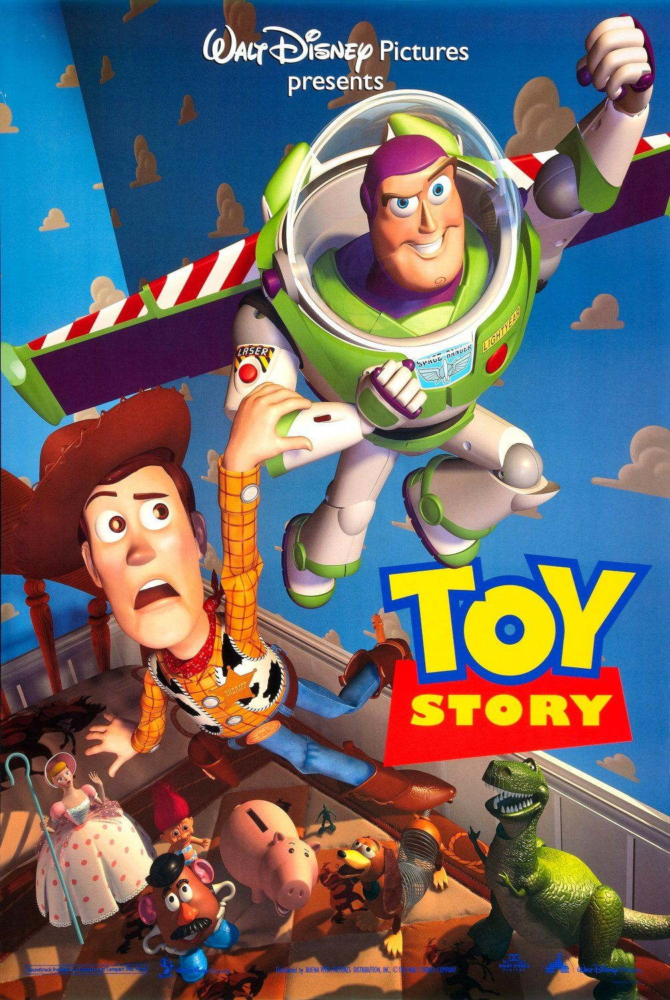 | Set in a world where toys are sentient, this film is centered around the adventures of the Woody the Cowboy, Buzz Lightyear the Space Ranger, and all their toy friends. When Andy and his family move to another house, Woody and Buzz must set aside their differences and work together to escape out of Sid's house, Andy's neighbour, before they get left behind forever. |
| A Bug’s Life (1998) |  |
This film revolves around an ant inventor named Flik, who is an outcast in his ant colony. He recruits a team of insect warriors (who are really circus bugs) in an attempt to prove his worth after a disastrous mishap, and togther they fight against the evil grasshoppers who threaten the ant colony. |
| Toy Story 2 (1999) | 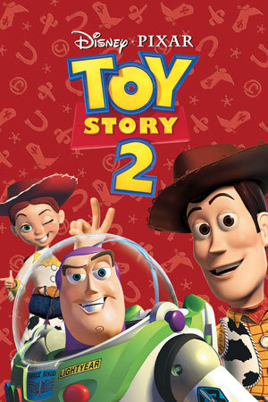 | In this sequel to Toy Story, Woody is stolen by a toy collector to be sold to a musuem in Japan. His toy friends, including the beloved cast of Buzz Lightyear the Space Ranger; Rex, a toy Tyrannosaurus Rex; Hamm, a piggy bank; Mr. Potato Head and Slinky Dog, a daschund slinky, go on an adventure in the Tri-State Area to save Woody before it is too late. |
| Monsters, Inc.(2001) | 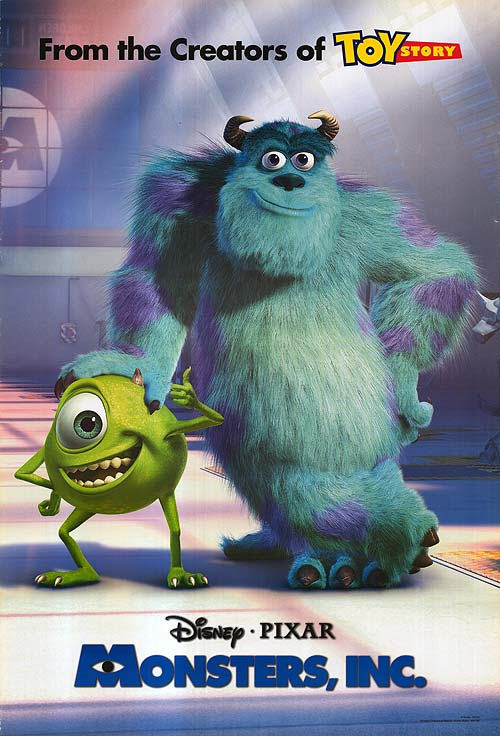 | In a world overrun with monsters, this film features the many monsters who work in Monsters, Inc factory where the monsters visit the world of Humans where they collect the screams of human children to power the Monster World. When a little girl called Boo travels across the two worlds, the protagonists James P. Sullivan and Mike Wazowski attempt to bring her back to the human world. |
| Finding Nemo (2003) | 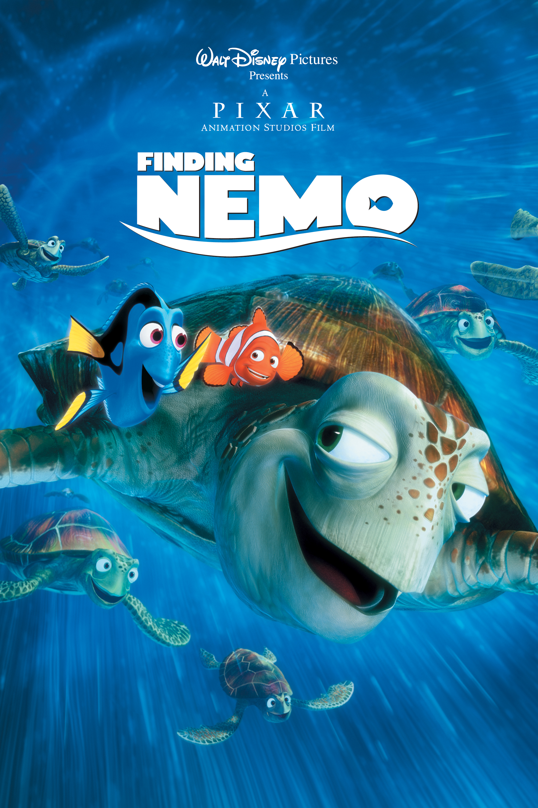 | This movie revolves around Marlin, a widowed and overly-cautious clownfish who travels across the sea with Dory, a perky, but forgetful, blue tang fish across the sea to find Marlin's lost son Nemo. Nemo, who was kidnapped by scuba divers after attempting to prove himself to his father, is trapped in a fish tank, but with the help of his newfond friends, attempts to escpae to return to his father. |
| The Incredibles (2004) | 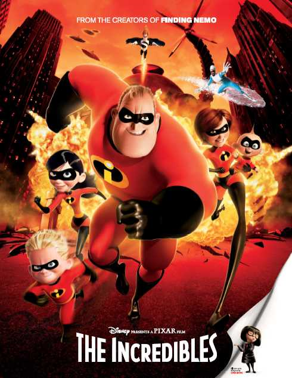 | In a time where superheroes are forced into hiding and assimilating with common civilians, married superhero couple Mr. Incredible and Elastigirl are stuck living mundane lives. When Mr.Incredible is offered a chance to save the world, he adversely jeopardizes it, leaving his family comprised of Violet, Dash, Jack Jack and Elastigirl to save him and the world. |
| Cars (2006) | 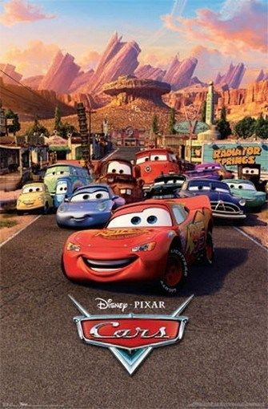 | Lightning McQueen is an up-and-coming racing car with an overinflated ego to come with his impressive reputation. While traveling to race in the Piston Cup Championship, he gets lost in a run-down town called Radiator Springs. As he spends time there bonding with the oddball residents there, including Sally, Doc and Mater, Lightning learns about humility and that life isn't alla bout winning. |
| Ratatouille (2007) | 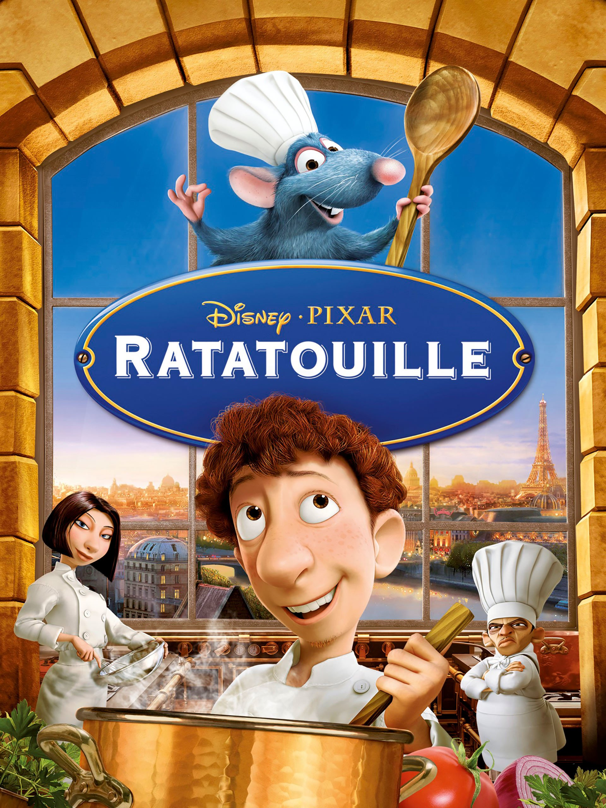 | Remy is a rat who dreams of becoming a chef. He lives with his rat clan in the French countryside and wishes to eat 'real food' and not the garbage that they eat everyday.When he accidentally destroys the only home he's ever known, he and his rat clan set off to Paris. It is in Paris where Remy meets the clumsy human Linguini who helps him make his dreams of becoming a chef come true. |
| WALL•E (2008) |  |
Set in the distant future, humans have left Earth as they have used up the Earth's maximum capicity as landfill. Humans now live on a giant space cruise ship where all their needs are met. The story revolves areound WALL•E, the only garbage compressor left after the humans' departure 700 years ago. He is all alone on the earth, until he meets EVE, and together they set out on an adventure in space to return humankind to earth. |
| Up (2009) |  |
Carl Frederickson is an old man living by himself after his beloved wife Ellie dies. In order to keep the promise he made to his wife when they were children, he ties up 1000 balloons to his house and sets off to Paradise Falls, where both he and his wife planned to go to in their married life. Along the way, a little boy named Russell and a talking dog named Dug join him on an adventure bigger than he imagined. |
| Toy Story 3 (2010) | 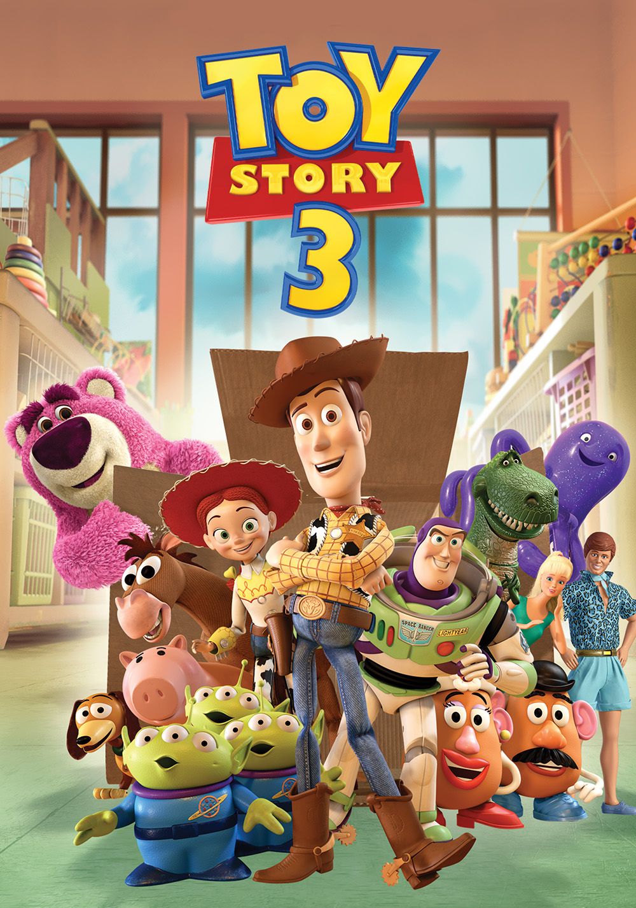 | In the second sequel of the Toy Story franchise, Andy is preparing to go to college. He puts all his toys, including Woody and Buzz in a box to be put in an attic, but his mother accidentally switches that box full of toy to be donated to the local daycare. When the toys realize about the mixup, they try to escape the daycare and make theri way back hom to Andy before he leaves. |
| Cars 2 (2011) | 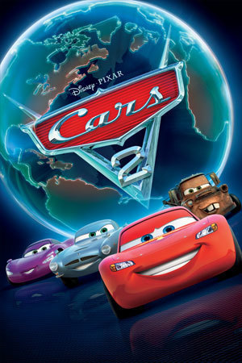 | In the sequel of the Cars franchise, Mater, a deuteragaonist in the first film is in the limelight. Mater is caught in a conspiracy involving the World Grand Prix and is enlisted by a British Spy Agency to stop the evil Professor Z from sabotaging the race. |
| Brave (2012) | 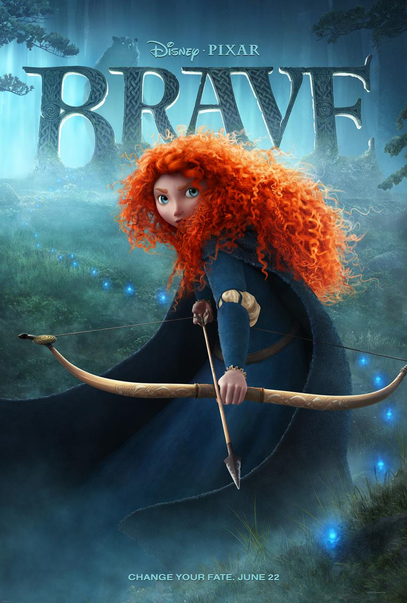 | Set in medieveal Scotland, in the kingdom of Dunbroch, Princess Merida wishes to defy her fate of being married to one of the sons of the Highland Lords. To alter her fate, she consults an eccentric witch to change her mother's mind of having her wed. Merida gets more than what she bargained for when she untintentionally curses her mother, bringing chaos to the kingdom of Dunbroch. |
| Monsters University (2013) | 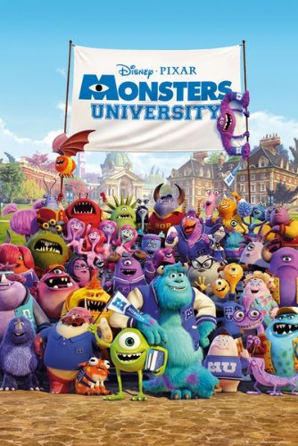 | Monsters University is the prequel to Monsters&comma, Inc. It focuses on the story of how best friends James P. Sullivan (Sully) and Mike Wazowski met and overcame their bitter rivalry and revolves around their misadventures in university and redemption. |
| Inside Out (2015) | 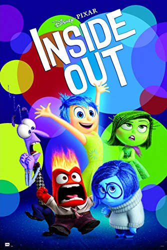 | 11-year-old Riley Anderson has just moved to San Fransico all the way from Minnesota beacuse of her dad's new job. Her five main emotions, Joy, Sadness, Aner, Disgust and Fear work together to help Riley cope with her new surroundings and life. Her five emotions control how Riley feels, but when Joy and Sadness accidentally get kicked out of Headquarters, where they work, Riley's life spirals out of control. This leaves Joy and Sadness to overcome their differences and work together in a race against time to get to Headquarters to save Riley. |
| The Good Dinosaur (2015) | 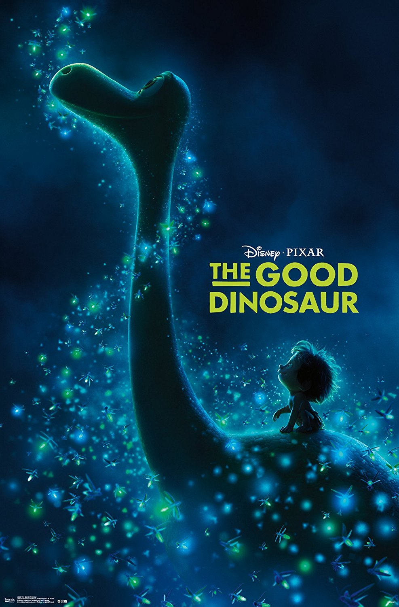 | In an alternate universe where dinosaurs never became extinct, focuses on the runt of an apatosaurud family, Arlo. When Arlo tries to find the primitive cave boy who stole his family's crop, he becomes lost in the dangerous wilderness outside his farm. He teams up with the primitive caveboy, whom he calls Spot and they go on a journey to return home. |
| Finding Dory (2016) | 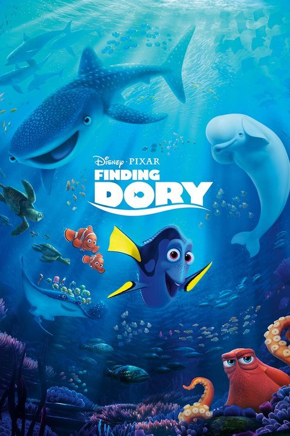 | In the sequel to Finding Nemo, one year has past since Nemo got rescued by Marlin and Dory. Together, they live happily in the coral reef. One day, Dory remembers her family and the three set off to find her parents. They reach a Marine Life Institute where they go on a wild adventure and meet some new friends, all while trying to find Dory's long lost parents. |
| Cars 3 (2017) | 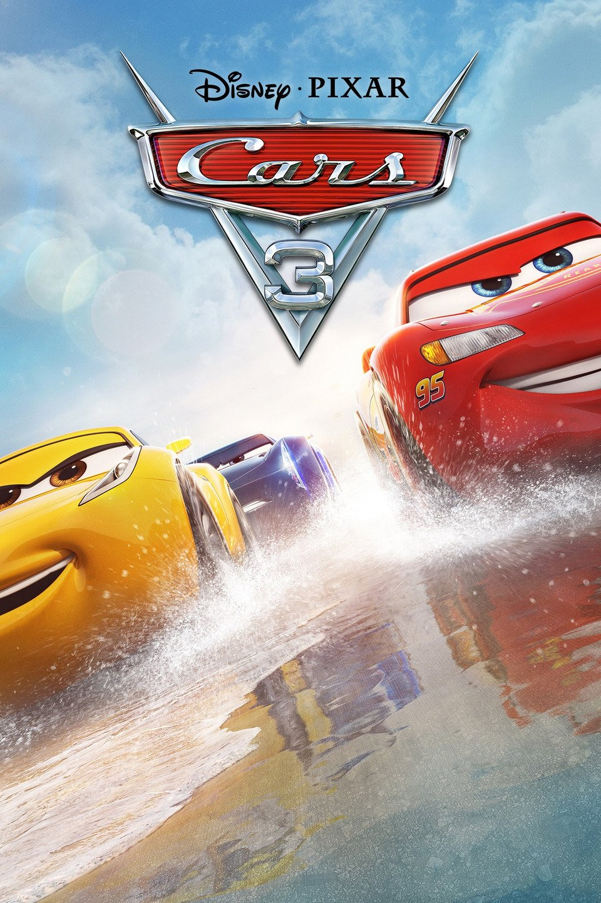 | In the third sequel of the Cars franchise, it revolves around Lightning McQueen, now a verteran in the racing world. He is slowly becoming replaced with faster, better and newer racing generation. He recruits Cruz Ramirez, a trainee to help him to win the Florida 500 so that he can keep racing and keep living his dream before he's forced out his career. |
| Coco (2017) | 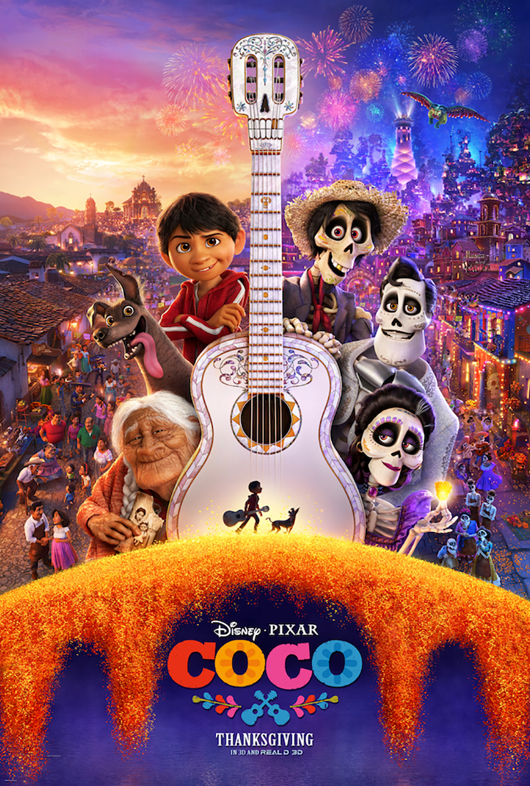 | 12-year-old Miguel secretly love to play music, despite his family's ban on music, as their greta-great-great grandfater Hector had abandoned his family in pursuit of a musical career. On the Day of the Dead, he tries to steal a guitar from the grave of whom he believes to be his grandfather, the famous De La Cruz. He becomes transported to the Land of the Dead, and must return before sunrise, or he will be trapped in the Land of the dead forever, never to return to the Land of the Living. |
Below there is a list of the short films that the company has made since The Adventures of André and Wally B (1984) to its most recent short film Lou (2017).
| Short Film | Movie Poster | Description |
|---|---|---|
| The Adventures of André & Wally B.(1984) | 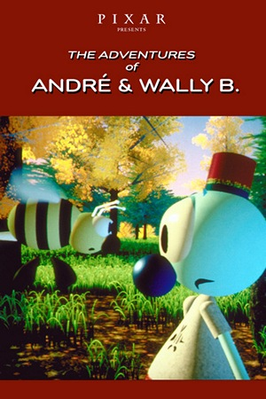 | André is attacked by a pesky and cheeky bee, and this short film follows the chaos that ensues between him and the bee, Wally B. |
| Luxo Jr. (1986) | 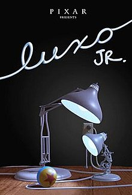 | Arguably Pixar's most famous short, this short follows Luxo, a lamplight and his son Luxo Jr., a much smaller version of him, as they bond together with the iconic Luxo ball. |
| Red’s Dream (1987) | 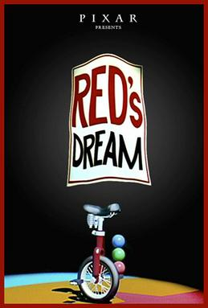 | A lonely unicycle in a thrift shop imagines what it would be like to be in a circus and what it is like to be ridden by a clown. |
| Tin Toy (1988) | 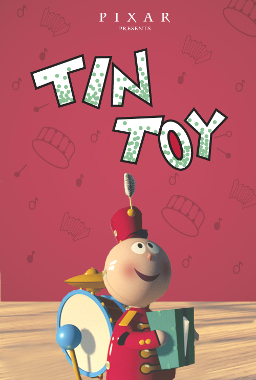 | A mechanical one–man&ndashband toy named Tinny is delighted to be played with the little baby Billy until he realizes how destructive babies can be. The short follows Tinny as he tries run away from the baby, and later, try to capture his attention. |
| Knick Knack (1989) | 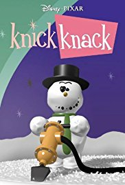 | Knick is a snowman that occupies a snow globe from Nome, Alaska on a shelf full of souvenirs. Knick wants to be with the other "hotter" souvenirs,like the ones from Miami and makes many failed attempts to reach them. |
| Geri’s Game (1997) | 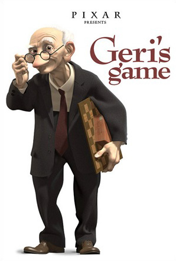 | An old man called Geri plays an enthralling and surreal game of chess with himself in a park. |
| For the Birds (2000) | 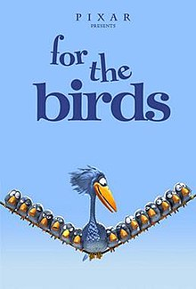 | A large bird tries to make friends with other, much smaller birds on a telephone line. |
| Boundin’(2003) | 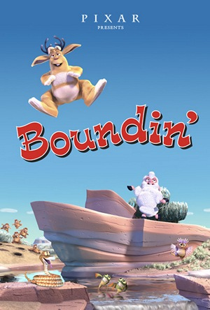 | A jackalope helps to boost the confidences of a dancing sheep who's lost his confidence after having his woool sheared in the American West. |
| One Man Band (2005) | 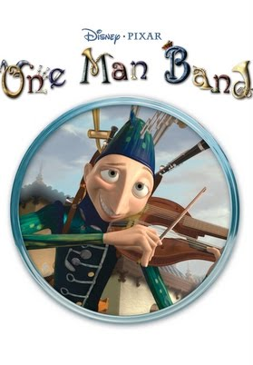 | Two talented one–man–bands compete for the money of a little village girl in a contest to see whose music is better. |
| Lifted (2006) | 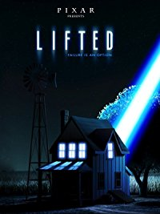 | An alien is tested on how to abduct humans from their homes while sleeping in a similar fashion that a teenager would be tested to get their driver's license. |
| Partly Cloudy (2009) | 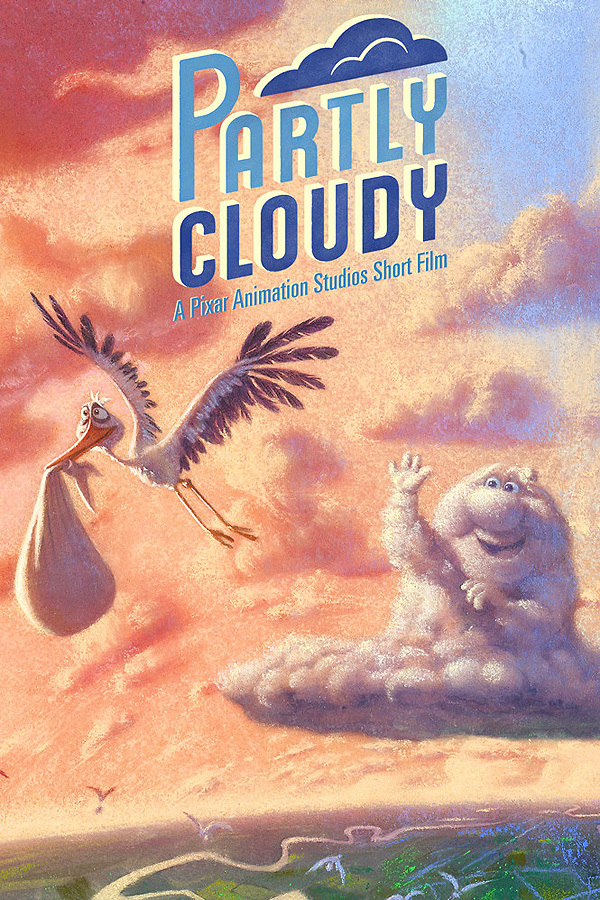 | A dark gray cloud tries to make babies for storks to bring to their parents, but instead makes dangerous baby animals like crocodiles. A stork friend helps him to embrace his talent after he loses confidence in his creations. |
| Day and Night (2010) | 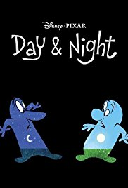 | The personified versions of day and night meet and eventually become friends after overcoming and embracing each others differences. |
| La Luna (2011) | 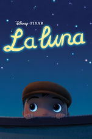 | A young boy named Bambino works with his grandfather and father to help change the moon changes its phase for the month. Despite his father and grandfather arguing about how the moon should be changed, they all work together to get the job done. |
| The Blue Umbrella (2013) | 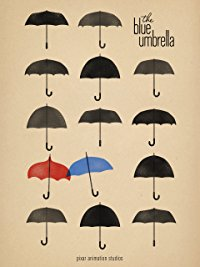 | A blue umbrella falls in love with a red umbrella and tries to pursue her during a windy, rainy day. |
| Lava (2014) | 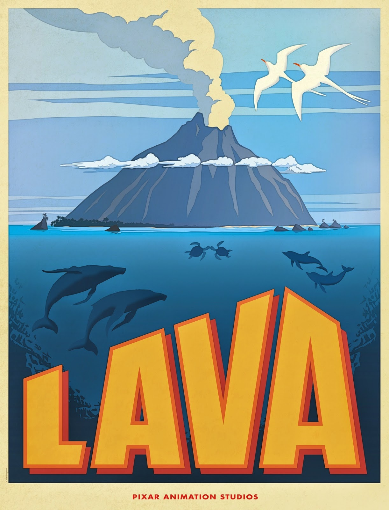 | Uku, a volcano yearns to have company after seeing animals together and sings about having someone to 'lava'. Lele, another volcano hears his song and together, they create one large island and live happily together. |
| Sanjay’s Super Team(2015) | 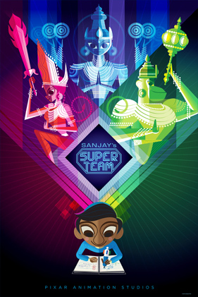 | Sanjay wants to play with his superhero action figures, but his father wants Sanjay to join him in a daily Hindu ritual. He begrudgingly agrees, but changes his mind after having a dream about three holy deities much like his superhero idols, and bonds with his father over his Hindu–deity inspired comics. |
| Piper (2016) | 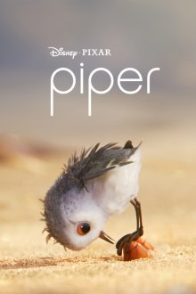 | A sandpiper named Piper is deathly afraid of the water after almost becoming washed away by the ocean's waves. Her mind is soon changed after she comes across a tiny crab and her perception of the ocean changes forever. |
| Lou (2017) | 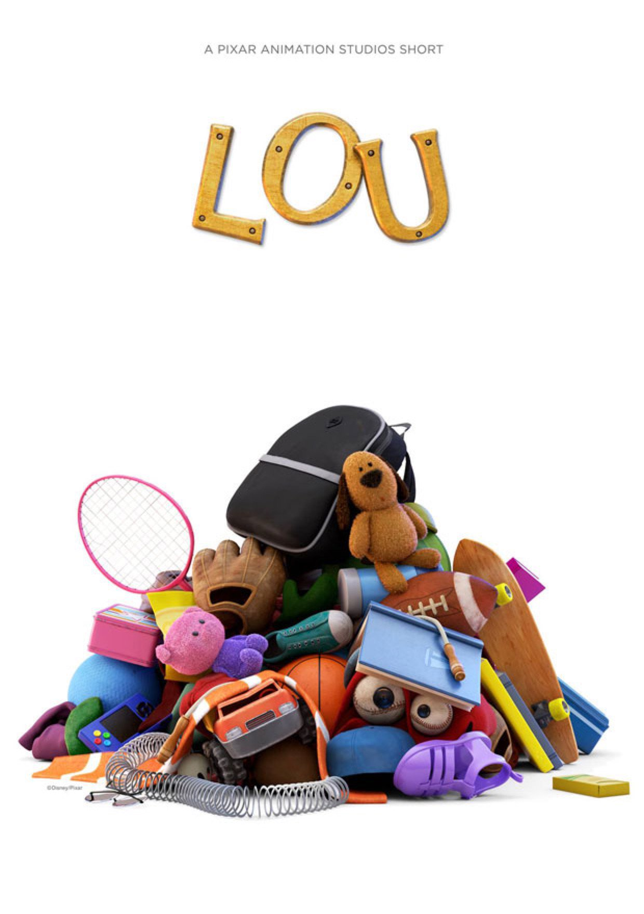 | A school bully makes amends with the kids of the playground by returning all of the stolen and missing toys that he has and finds in the Lost and Found box. |